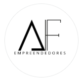
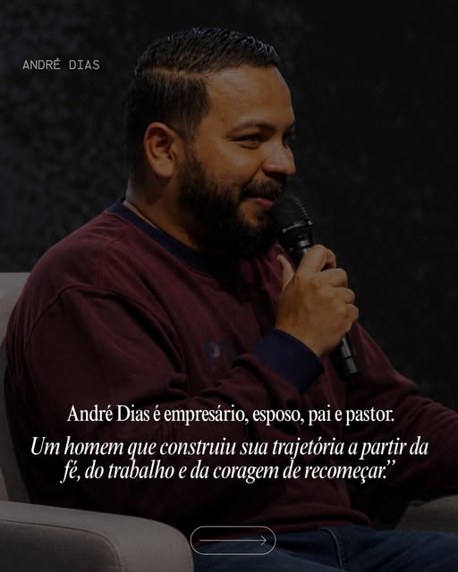

Para quem tem o chamado, mas ainda não conseguiu começar.
Coragem

A FonteUm movimento de fé e negócios
Um lugar para empreendedores encontrarem propósito, direção e uma comunidade que coloca Jesus no centro de cada decisão.
Fé que
move negócios
Empreender também é responder a um chamado. Estamos aqui para acolher quem ainda não começou, fortalecer quem quase desistiu e caminhar com quem deseja construir de um jeito diferente.
“Jesus é a fonte que sua empresa precisa.”
Não importa em qual ponto da caminhada você está. Há direção, recomeço e propósito para a sua história.

Uma jornada de fé, trabalho e coragem para recomeçar.Mais do que estratégias, números ou crescimento: queremos formar empreendedores conscientes do chamado que carregam. Gente que prospera sem perder a essência, lidera com sabedoria e entende que toda boa construção começa no lugar secreto.
Imagens do perfil oficial @afontedoempreendedor_
Construímos pontes com quem acredita em empreendedores mais conscientes, negócios saudáveis e Jesus no centro de cada decisão.
Quero ser parceiro ↗Ambientes que acolhem, conectam e fortalecem empreendedores em sua jornada.
Negócios que desejam gerar impacto sem abrir mão de valores e da essência.
Profissionais dispostos a compartilhar conhecimento, direção e experiência.
Este espaço foi preparado para receber experiências reais da nossa comunidade. Cada história pode ser a direção que outro empreendedor precisa.
Histórias de quem encontrou coragem para transformar o chamado em movimento.
Novos começosRelatos de quem decidiu levantar, reorganizar a rota e tentar mais uma vez.
RestauraçãoExperiências de quem colocou Jesus no centro da empresa e das decisões.
PropósitoSua jornada pode começar aqui
Você não precisa construir sozinho. Faça parte de uma comunidade que acredita no seu chamado e caminha na mesma direção.
Siga e faça parte ↗